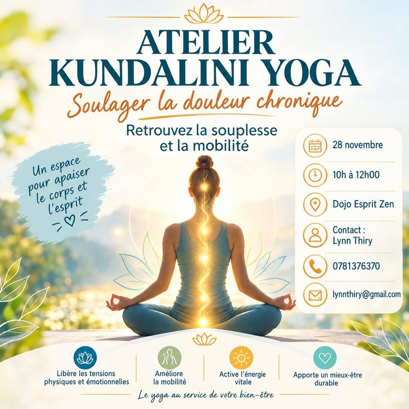
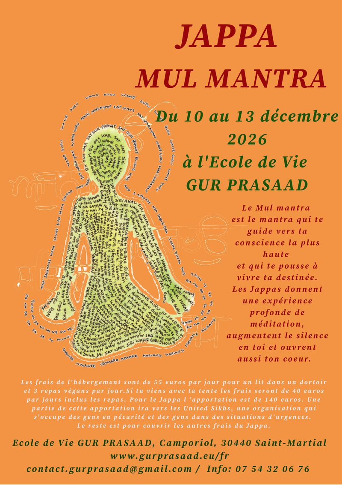
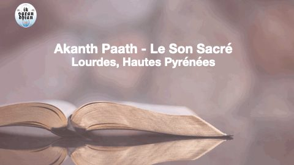
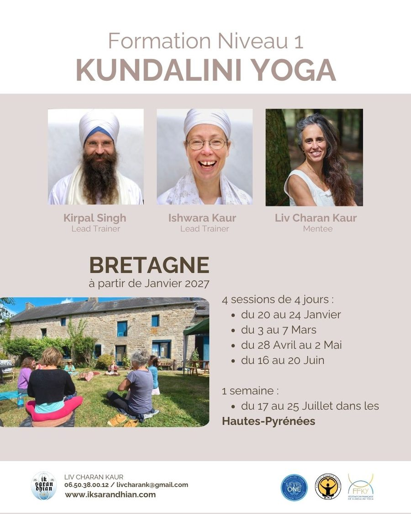
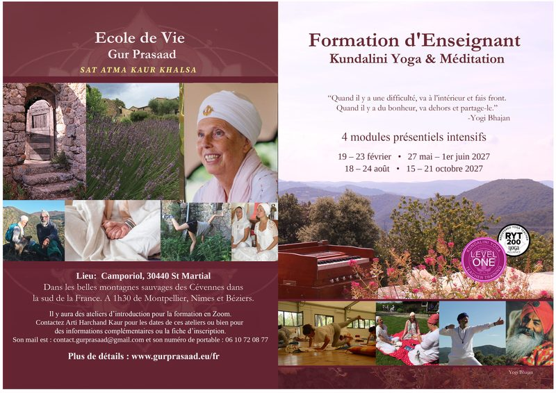
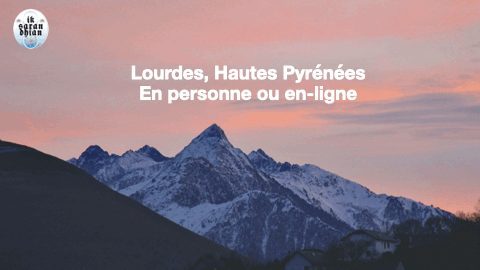
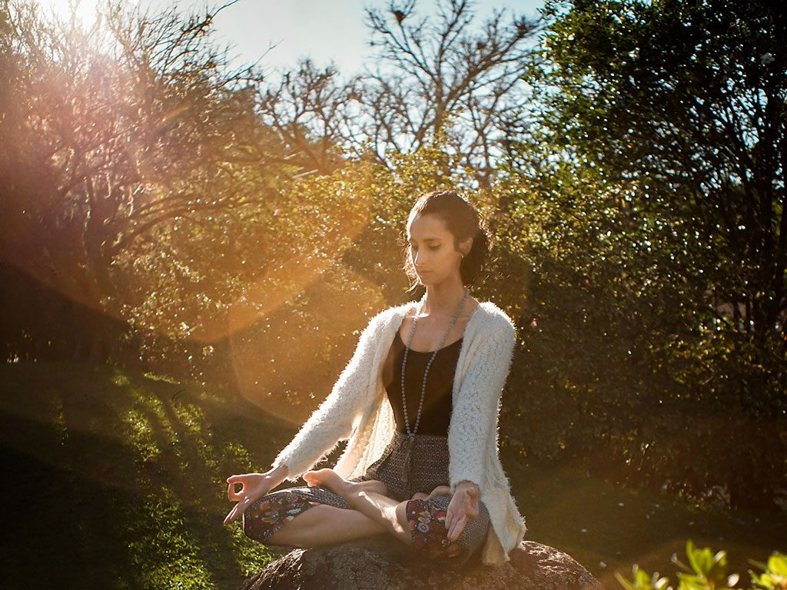
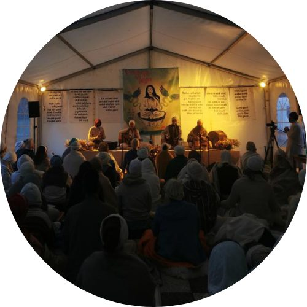
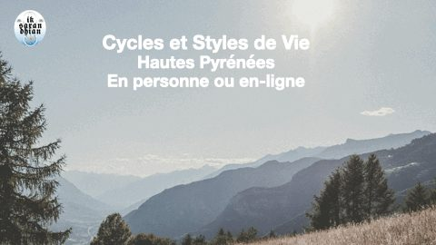

Pratiquer · CalendrierLe calendrier
Stages, ateliers, formations et festival réunis dans un seul agenda, avec un filtre par type. Cette page est reliée depuis l’accueil, « Pratiquer » et « Se former ».
-
28–29nov. 2026

-
30nov. 2026

-
10–13déc. 2026

-
19–20déc. 2026

-
30déc. 2026

-
20–24janv. 2027
formationFormation Niveau 1 2027 Bretagne et Hautes-Pyrénées, Ik Saran Dhian
Ploeuc-L’Hermitage (22) · 4 sessions de 4 jours en Bretagne, puis une semaine dans les Hautes-Pyrénées du 17 au 25 juillet

-
19févr. 2027
formationFormation d’enseignant Kundalini Yoga Niveau 1
Saint-Martial (30) · jusqu’au 21 octobre 2027

-
16–24mars 2027

-
22–25avril 2027

-
5–9mai 2027
festivalPrintemps du Yoga 2027
Domaine de Puygiraud, Saint-Pierre-de-Maillé (86) · le festival de la FFKY

-
13–20mai 2027

Les prochains stages apparaissent ici dès leur publication par les enseignant·es adhérent·es.
Publier un événement
Votre adhésion vous donne accès à l’agenda en ligne pour promouvoir vos stages, ateliers et formations : ils apparaissent ici, dans la bonne catégorie.
Adhérer comme enseignant·eSélection des événements à venir publiés sur ffky.fr (lecture du 28/11/2026 · v2.1). Dans le site final : un seul agenda Events Manager, une catégorie par type, et des liens directs filtrés (par exemple calendrier.html?type=formation depuis « Se former »).